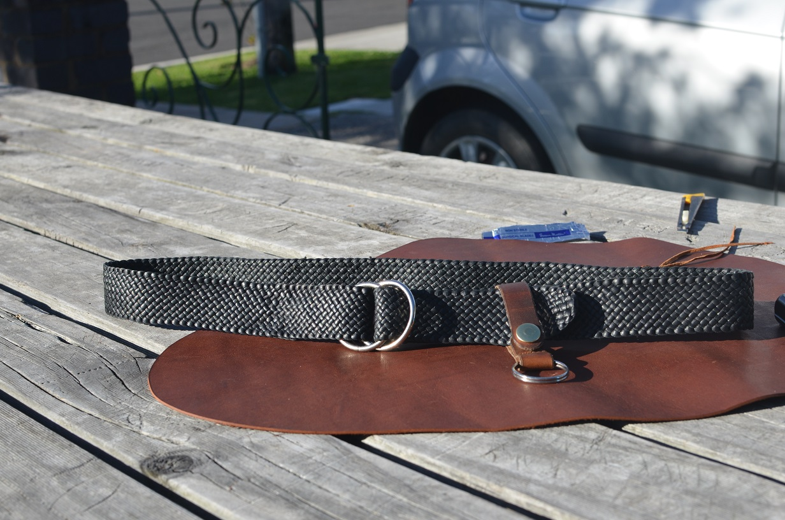
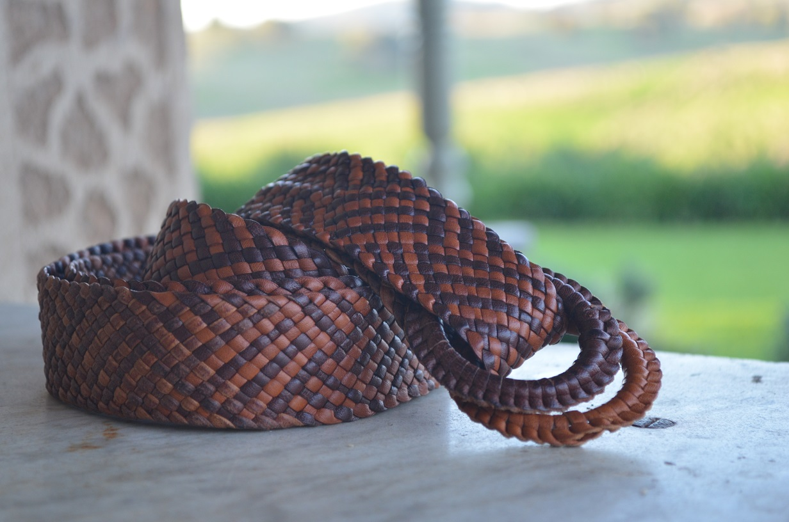

Photos



About
Plaited belts are my feature item at Laidley Leather. Belts were one of the first items that I learnt to plait when I was young and to this day are my most made item. They are made from Australian tanned kangaroo skin which I hand cut and lace myself. I can make them in various patterns, sizes, and lengths depending on the customers needs.
Prices
Prices start at $150 for a standard 12 plait belt like the first photo. For prices on more detailed patterns and higher number plaits please contact me via the details on the home page.
Photos